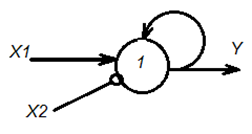
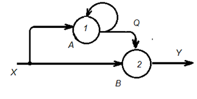
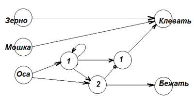

Динамические сети позволяют реализовать системы с памятью. Естественно, динамическая система обязательно в своей структуре будет иметь обратную связь.
С точки зрения программирования это дает возможность реализовать циклы (FOR, WHILE), связанные со счётчиками и другими структурами.
Пример. Цыпленок с момента рождения клюёт всё подряд (зерно, мух, ос). Однако, если однажды он клюнет осу, то она его ужалит. И он, почувствовав боль, никогда уже не будет клевать ос, но будет продолжать клевать мошек и зёрна. У него выработается в процессе опыта отвращение к желтым полосатым объектам.
Это явление называется условным рефлексом. Нейросеть, чтобы вырабатывать у существ условный рефлекс, должна стать динамической, системой с памятью, с обратной связью. Надо уметь запоминать ситуации, приводящие к неприятностям, чтобы избегать их в дальнейшем по появляющимся на горизонте признакам.
На рисунке показан нейрон, реализующий запоминание входного сигнала X1. Даже в случае, когда сигнал X1 сначала появляется, а потом исчезает, нейрон помнит о
том, что сигнал был. Для этого указанный сигнал возвращается по обратной связи на вход нейрона. Теперь нейрон всё время будет сам себя возбуждать.
Чтобы забыть этот факт, достаточно подать сигнал обратного знака (k=-1) на вход X2, который стирает информацию из памяти (reset). (В сумматоре эти два
сигнала – старый и новый - погасят друг друга). В инженерии такое устройство называется триггер.
Сеть, реализующая процесс запоминания, ячейка памяти

Сеть, реализующая условный рефлекс

Формально, описать триггер можно функцией: Y(t+dt)=one(Y(t)+X(t)-R(t)-1), где Y – выходной сигнал, X – сигнал записи в триггер,
R – сигнал сброса состояния триггера. Особенностью записи является то, что она является неявным выражением, уравнением, так как Y присутствует в обеих частях
уравнения.
Схема условного рефлекса, собранная на двух нейронах, позволяет реализовать условный рефлекс, формирующийся на основе ранее собранного опыта и со временем меняющий поведение сети.
Первый раз входной кратковременный одиночный сигнал X пробить нейрон В не может (Y=0) из-за порога h = 2, но этот сигнал, тем не менее, проходит
на нейрон A и запоминается в нём возбуждённым состоянием этого нейрона. На выходе Q теперь постоянно висит сигнал Q = 1, помнящий о том, что один раз
факт прихода сигнала X уже был. Однако нейрон пока В всё равно не сработает, так как сигнал Х уже отсутствует, а сигнала Q для активации второго
нейрона в одиночку недостаточно.
Когда сигнал X придёт второй раз, сеть сработает окончательно (выход Y станет равным 1), так как двух сигналов X и Q в сумме уже достаточно,
чтобы пробить и возбудить второй нейрон В. Таким образом сеть умеет считать до двух и запоминать «неприятности», меняя логику дальнейших действий. Работу таких схем можно
сравнить с работой железнодорожных стрелок, которые закрывают одни пути прохождения сигналов (поездов) и открывают другие по условию.
Сеть, реализующая модель условного рефлекса цыпленка, может выглядеть так, как показано на рисунке.

Нейросеть с памятью для реализации условного рефлекса
Условный рефлекс может быть весьма сложным. Например, было замечено, что вОроны умеют считать до 7.
Жил на дереве около замка ворон. На подоконнике окна башни замка лежал сыр. В дверь башни заходил человек. Ворон, понимая, что в башне есть человек, не рискует лететь за лакомством. Когда в башню заходили еще три человека, а потом выходило два, ворон всё ещё не летел за сыром, так как вычислял, что в башне спрятались два человека. Люди входили и выходили, а ворон считал. Прилетал ворон, чтобы съесть сыр, только тогда, когда количество людей в башне, по его подсчётам, становилось равным нулю. Сбился ворон при количестве людей в башне, равном 7.
Задания
Спроектируйте сеть, которая умеет считать до 7, как входящих, так и выходящих людей. Сеть должна отслеживать текущее количество находящихся в башне людей. Люди входят и выходят строго по одному.
Спроектируйте сеть, которая подсчитывает по внешнему запросу сумму двух чисел от двух разных воронов. Спроектируйте сеть, которая помнит самое большое число из заданных ей когда-либо чисел.
Спроектируйте нейросеть, управляющую теплицей, выращивающей овощи. Полив, освещение, вентиляция, внесение питательных веществ должна осуществлять сеть в соответствии с условиями содержания растений и показаниями датчиков. Предложите два варианта решения: статический и динамический.
Самый известный пример условного рефлекса – собака Павлова. У собаки выделяется слюна на мясо. Если одновременно с мясом зажигать свет, то через некоторое число
повторений этого опыта собака будет выделять слюну на свет, даже если мясо уже будет отсутствовать. У собаки вырабатывается условный рефлекс. Далее, можно повторить
опыт со светом и колокольчиком (без мяса). Условный рефлекс вырабатывания слюны перейдёт на звук колокольчика. Есть звук – есть слюна, нет звука – нет слюны.
Это явление И.П. Павлов назвал вторичным условным рефлексом. В принципе можно выработать причинно-следственную связь на любые сигналы. А это значит, что сеть может
формировать в процессе изучения мира законы, реагировать действием Y на раздражитель X. И только многократные обманы, количество которых сеть то же подсчитает,
позволит обнулить рефлексы. Так что рефлексы надо время от времени поддерживать, иначе они пропадают.
Очевидно, что сеть должна считать количество подтверждений и опровержений наблюдаемого факта, а также их разность. О ёмкости таких счетчиков в сетях говорят коэффициенты
авантюрности и консерватизма, проявляющиеся индивидуально у отдельных особей.
Задания
Спроектируйте сеть «Собака Павлова».
Реализуйте нейросеть, которая может складывать числа и умножать их (так называемый регистр в вычислительных структурах).
Вывод. Использование логических и динамических систем с памятью открывает пути построения на их основе вычислительных систем.